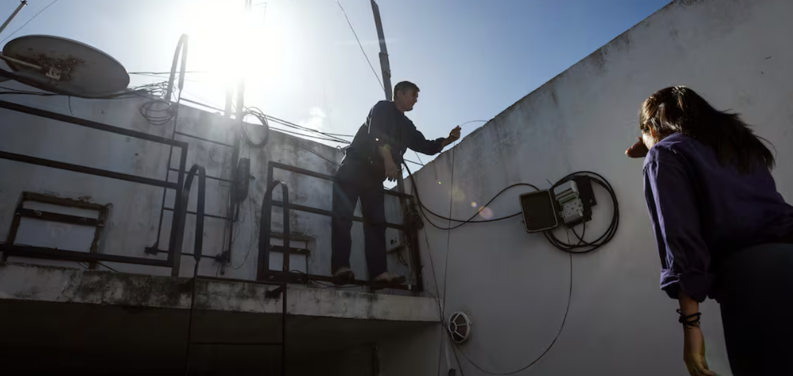

"Red comunitaria de wifi conecta barrios marginados de Buenos Aires"
El artículo presenta “Soldati Conectada”, una red comunitaria de WiFi desarrollada por vecinos de cinco barrios populares de Buenos Aires con el objetivo de garantizar el acceso a internet en zonas históricamente marginadas. Impulsada por la Asociación Civil El Hormiguero, la iniciativa ha logrado instalar más de 80 puntos de conexión gratuita en calles, escuelas, comedores y centros culturales, beneficiando a miles de residentes. Además de mejorar la conectividad, el proyecto ofrece talleres de capacitación técnica que permiten a jóvenes del barrio formarse en instalación, mantenimiento de redes y tecnologías digitales, generando oportunidades de empleo y fortaleciendo capacidades locales. La red también promueve la inclusión digital y facilita el acceso a derechos fundamentales como la educación, la salud y la participación ciudadana. “Soldati Conectada” ha recibido reconocimientos por su impacto social y ha comenzado a ser replicada en otras comunidades, demostrando el potencial de la tecnología como herramienta de transformación comunitaria.